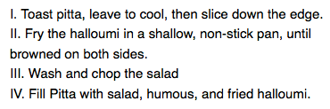

Lists behave like any other text for the most part, but there are some CSS properties specific to lists that you need to know about, and some best practices to consider. This article explains all.
| Prerequisites: | Basic computer literacy, HTML basics (study Introduction to HTML), CSS basics (study Introduction to CSS), CSS text and font fundamentals. |
|---|---|
| Objective: | To become familiar with the best practices and properties related to styling lists. |
To begin with, let's look at a simple list example. Throughout this article, we'll look at unordered, ordered, and description lists — all have styling features that are similar, and some that are particular to their type of list. The unstyled example is available on Github (check out the source code too.)
The HTML for our list example looks like so:
<h2>Shopping (unordered) list</h2> <p>Paragraph for reference, paragraph for reference, paragraph for reference, paragraph for reference, paragraph for reference, paragraph for reference.</p> <ul> <li>Hummus</li> <li>Pita</li> <li>Green salad</li> <li>Halloumi</li> </ul> <h2>Recipe (ordered) list</h2> <p>Paragraph for reference, paragraph for reference, paragraph for reference, paragraph for reference, paragraph for reference, paragraph for reference.</p> <ol> <li>Toast pita, leave to cool, then slice down the edge.</li> <li>Fry the halloumi in a shallow, non-stick pan, until browned on both sides.</li> <li>Wash and chop the salad.</li> <li>Fill pita with salad, hummus, and fried halloumi.</li> </ol> <h2>Ingredient description list</h2> <p>Paragraph for reference, paragraph for reference, paragraph for reference, paragraph for reference, paragraph for reference, paragraph for reference.</p> <dl> <dt>Hummus</dt> <dd>A thick dip/sauce generally made from chick peas blended with tahini, lemon juice, salt, garlic, and other ingredients.</dd> <dt>Pita</dt> <dd>A soft, slightly leavened flatbread.</dd> <dt>Halloumi</dt> <dd>A semi-hard, unripened, brined cheese with a higher-than-usual melting point, usually made from goat/sheep milk.</dd> <dt>Green salad</dt> <dd>That green healthy stuff that many of us just use to garnish kebabs.</dd> </dl>
If you go to the live example now and investigate the list elements using browser developer tools, you'll notice a couple of styling defaults:
16px (1em) and a {{cssxref("padding-left")}} of 40px (2.5em.)16px (1em), but no padding set.40px (2.5em.)16px (1em), the same as the different list types.When styling lists, you need to adjust their styles so they keep the same vertical spacing as their surrounding elements (such as paragraphs and images; sometimes called vertical rhythm), and the same horizontal spacing as each other (you can see the finished styled example on Github, and find the source code too.)
The CSS used for the text styling and spacing is as follows:
/* General styles */
html {
font-family: Helvetica, Arial, sans-serif;
font-size: 10px;
}
h2 {
font-size: 2rem;
}
ul,ol,dl,p {
font-size: 1.5rem;
}
li, p {
line-height: 1.5;
}
/* Description list styles */
dd, dt {
line-height: 1.5;
}
dt {
font-weight: bold;
}
line-height on the description list terms and descriptions as we did with the paragraphs and list items. Again, consistency is good! We also make the description terms have bold font, so they visually stand out easier.Now we've looked at general spacing techniques for lists, let's explore some list-specific properties. There are three properties you should know about to start with, which can be set on {{htmlelement("ul")}} or {{htmlelement("ol")}} elements:
As mentioned above, the {{cssxref("list-style-type")}} property allows you to set what type of bullet to use for the bullet points. In our example, we've set the ordered list to use uppercase roman numerals, with:
ol {
list-style-type: upper-roman;
}
This gives us the following look:
You can find a lot more options by checking out the {{cssxref("list-style-type")}} reference page.
The {{cssxref("list-style-position")}} property sets whether the bullets appear inside the list items, or outside them before the start of each item. The default value is outside, which causes the bullets to sit outside the list items, as seen above.
If you set the value to inside, the bullets will sit inside the lines:
ol {
list-style-type: upper-roman;
list-style-position: inside;
}

The {{cssxref("list-style-image")}} property allows you to use a custom image for your bullet. The syntax is pretty simple:
ul {
list-style-image: url(star.svg);
}
However, this property is a bit limited in terms of controlling the position, size, etc. of the bullets. You are better off using the {{cssxref("background")}} family of properties, which you've learned in the Backgrounds and borders article. For now, here's a taster!
In our finished example, we have styled the unordered list like so (on top of what you've already seen above):
ul {
padding-left: 2rem;
list-style-type: none;
}
ul li {
padding-left: 2rem;
background-image: url(star.svg);
background-position: 0 0;
background-size: 1.6rem 1.6rem;
background-repeat: no-repeat;
}
Here we've done the following:
40px to 20px, then set the same amount on the list items. This is so that overall the list items are still lined up with the order list items and the description list descriptions, but the list items have some padding for the background images to sit inside. If we didn't do this, the background images would overlap with the list item text, which would look messy.none, so that no bullet appears by default. We're going to use {{cssxref("background")}} properties to handle the bullets instead.0 0, which means the bullet will appear in the very top left of each list item.1.6rem (16px), which fits very nicely with the 20px padding we've allowed for the bullet to sit inside — 16px plus 4px of space between the bullet and the list item text works well.no-repeat.This gives us the following result:

The three properties mentioned above can all be set using a single shorthand property, {{cssxref("list-style")}}. For example, the following CSS:
ul {
list-style-type: square;
list-style-image: url(example.png);
list-style-position: inside;
}
Could be replaced by this:
ul {
list-style: square url(example.png) inside;
}
The values can be listed in any order, and you can use one, two or all three (the default values used for the properties that are not included are disc, none, and outside). If both a type and an image are specified, the type is used as a fallback if the image can't be loaded for some reason.
Sometimes you might want to count differently on an ordered list — e.g. starting from a number other than 1, or counting backwards, or counting in steps of more than 1. HTML and CSS have some tools to help you here.
The {{htmlattrxref("start","ol")}} attribute allows you to start the list counting from a number other than 1. The following example:
<ol start="4"> <li>Toast pita, leave to cool, then slice down the edge.</li> <li>Fry the halloumi in a shallow, non-stick pan, until browned on both sides.</li> <li>Wash and chop the salad.</li> <li>Fill pita with salad, hummus, and fried halloumi.</li> </ol>
Gives you this output:
{{ EmbedLiveSample('start', '100%', 150) }}
The {{htmlattrxref("reversed","ol")}} attribute will start the list counting down instead of up. The following example:
<ol start="4" reversed> <li>Toast pita, leave to cool, then slice down the edge.</li> <li>Fry the halloumi in a shallow, non-stick pan, until browned on both sides.</li> <li>Wash and chop the salad.</li> <li>Fill pita with salad, hummus, and fried halloumi.</li> </ol>
Gives you this output:
{{ EmbedLiveSample('reversed', '100%', 150) }}
Note: If there are more list items in a reversed list than the value of the start attribute, the count will continue to zero and then into negative values.
The {{htmlattrxref("value","ol")}} attribute allows you to set your list items to specific numerical values. The following example:
<ol> <li value="2">Toast pita, leave to cool, then slice down the edge.</li> <li value="4">Fry the halloumi in a shallow, non-stick pan, until browned on both sides.</li> <li value="6">Wash and chop the salad.</li> <li value="8">Fill pita with salad, hummus, and fried halloumi.</li> </ol>
Gives you this output:
{{ EmbedLiveSample('value', '100%', 150) }}
Note: Even if you are using a non-number {{cssxref("list-style-type")}}, you still need to use the equivalent numerical values in the value attribute.
In this active learning session, we want you to take what you've learned above and have a go at styling a nested list. We've provided you with the HTML, and we want you to:
If you make a mistake, you can always reset it using the Reset button. If you get really stuck, press the Show solution button to see a potential answer.
<div class="body-wrapper" style="font-family: 'Open Sans Light',Helvetica,Arial,sans-serif;">
<h2>HTML Input</h2>
<textarea id="code" class="html-input" style="width: 90%;height: 10em;padding: 10px;border: 1px solid #0095dd;"><ul>
<li>First, light the candle.</li>
<li>Next, open the box.</li>
<li>Finally, place the three magic items in the box, in this exact order, to complete the spell:
<ol>
<li>The book of spells</li>
<li>The shiny rod</li>
<li>The goblin statue</li>
</ol>
</li>
</ul></textarea>
<h2>CSS Input</h2>
<textarea id="code" class="css-input" style="width: 90%;height: 10em;padding: 10px;border: 1px solid #0095dd;"></textarea>
<h2>Output</h2>
<div class="output" style="width: 90%;height: 12em;padding: 10px;border: 1px solid #0095dd;overflow: auto;"></div>
<div class="controls">
<input id="reset" type="button" value="Reset" style="margin: 10px 10px 0 0;">
<input id="solution" type="button" value="Show solution" style="margin: 10px 0 0 10px;">
</div>
</div>
var htmlInput = document.querySelector(".html-input");
var cssInput = document.querySelector(".css-input");
var reset = document.getElementById("reset");
var htmlCode = htmlInput.value;
var cssCode = cssInput.value;
var output = document.querySelector(".output");
var solution = document.getElementById("solution");
var styleElem = document.createElement('style');
var headElem = document.querySelector('head');
headElem.appendChild(styleElem);
function drawOutput() {
output.innerHTML = htmlInput.value;
styleElem.textContent = cssInput.value;
}
reset.addEventListener("click", function() {
htmlInput.value = htmlCode;
cssInput.value = cssCode;
drawOutput();
});
solution.addEventListener("click", function() {
htmlInput.value = htmlCode;
cssInput.value = 'ul {\n list-style-type: square;\n}\n\nul li, ol li {\n line-height: 1.5;\n}\n\nol {\n list-style-type: lower-alpha\n}';
drawOutput();
});
htmlInput.addEventListener("input", drawOutput);
cssInput.addEventListener("input", drawOutput);
window.addEventListener("load", drawOutput);
{{ EmbedLiveSample('Playable_code', 700, 800) }}
CSS counters provide advanced tools for customizing list counting and styling, but they are quite complex. We recommend looking into these if you want to stretch yourself. See:
You've reached the end of this article, and already did some skill testing in our Active Learning sections, but can you remember the most important information going forward? You can find an assessment to verify that you've retained this information at the end of the module — see Typesetting a community school homepage.
This assessment tests all the knowledge discussed in this module, so you might want to read the other articles before moving on to it.
Lists are relatively easy to get the hang of styling once you know a few associated basic principles and specific properties. In the next article we'll get on to link styling techniques.
{{PreviousMenuNext("Learn/CSS/Styling_text/Fundamentals", "Learn/CSS/Styling_text/Styling_links", "Learn/CSS/Styling_text")}}